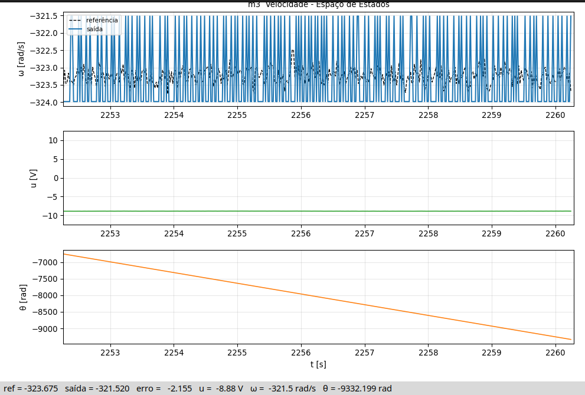
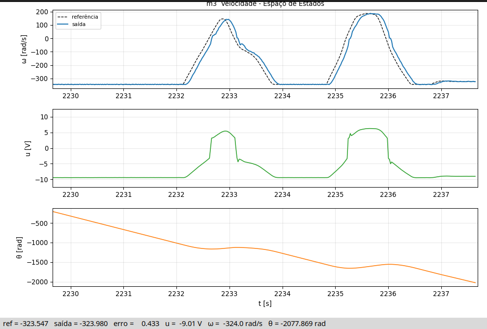
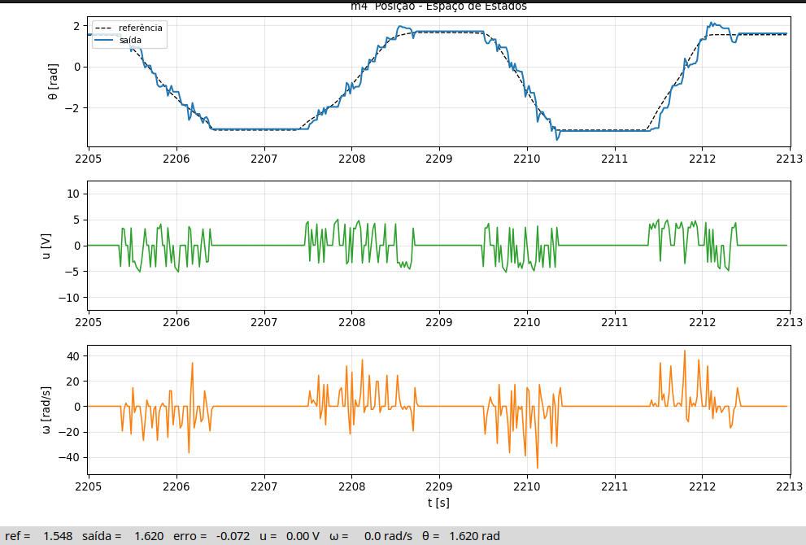

O que cada modo faz, o que o potenciômetro controla em cada um e o que você deve ver nos gráficos e no terminal. Cada modo termina com as perguntas que surgiram nos testes; as gerais estão logo abaixo do resumo. Todos os gráficos abaixo são ensaios reais desta bancada, gravados em dados/. Passe o mouse sobre eles para ler os valores.
| Modo | Controla | Potenciômetro define | Malha | Método | Resultado esperado |
|---|---|---|---|---|---|
| m0 | tensão | −12 … +12 V | aberta | nenhum (u = ref) | parado abaixo de ~3 V; acima disso ω ≈ 47·(u − 2,9) rad/s |
| m1 | velocidade | −350 … +350 rad/s | fechada | LGR · PI | chega em ~0,14 s, sobressinal ~2 %, erro < 1 rad/s |
| m2 | posição | −π … +π rad | fechada | LGR · avanço | rápido (~0,1 s), mas pode parar até 0,35 rad longe do alvo |
| m3 | velocidade | −350 … +350 rad/s | fechada | espaço de estados | igual ao m1: ~0,16 s, sobressinal ~2 % |
| m4 | posição | −π … +π rad | fechada | espaço de estados + integrador | mais lento (1–2 s), mas o integrador leva o erro a ~0,05 rad |
Perguntas feitas usando a bancada, com as respostas. As perguntas específicas de cada modo estão no fim da seção de cada um.
Nada muda quando giro o potenciômetro. O código não está funcionando?
O código estava funcionando. Numa gravação de 40 s, a referência ficou parada em −1,1 V enquanto o potenciômetro estava parado e, ao girá-lo, foi a −11,8 V e a +8,6 V, com o motor girando a até 415 rad/s. Dois motivos fazem parecer que "nada acontece":
/dev/ttyACM0 é um receptor GPS. A placa é a porta descrita como USB CDC-Serial (ttyACM1 ou ttyACM2). O painel agora escolhe essa porta sozinho, e o botão ↻ atualiza a lista se a placa reconectar com outro nome.O que é esse potenciômetro? Por que o motor gira para os dois lados?
É o botão giratório da bancada: um resistor com um contato deslizante, ligado entre 0 V e 5 V, com o cursor no pino A6. A placa lê de 0 a 4095 e converte para −1…+1, com o zero no meio do curso. Depois multiplica pela faixa do modo (±12 V, ±350 rad/s ou ±π rad).
O sinal define o sentido: valor positivo aciona o pino D10 da ponte H, valor negativo aciona o D9, e a corrente no motor se inverte. Por isso, de um lado do meio o motor gira num sentido e do outro lado inverte.
Acho que o zero não está exatamente no meio do potenciômetro. Precisa calibrar?
Investigamos e a resposta tem duas partes. O potenciômetro está bom: ele gira 300°, as pontas leem 0 e 4064 sempre, e numa varredura de batente a batente a leitura subiu em linha reta com o tempo, ou seja, é linear. O meio real do giro (150°) lê 2032. O "meio" que a gente enxerga no botão não é o meio do giro: três tentativas de parar "no meio" a olho deram 2535, 2914 e 2982, todas 45° a 70° depois do meio real.
Colocar o zero nesse "meio visual" deixa um lado muito mais sensível que o outro (gira-se pouco para chegar à velocidade máxima de um lado e muito do outro). Por isso a calibração adotada é a simétrica, pc 0,2032,4064,0.03, com zona neutra de 3 % em volta do meio. Ela fica salva na placa. Para mover o zero mesmo assim, em m1 gire até onde quer e mande pm; pa mostra a leitura bruta.
Tem como ver as saídas no terminal? Onde eu digito os comandos?
python3 interface/painel.py.m1, p, z, ?…) vão no campo Comando:, embaixo na janela do painel, e são enviados com Enter. A placa confirma com #ok ….Sem o painel: pio device monitor --echo (feche o painel antes, porque a porta só pode ser aberta por um programa de cada vez).
O que é cada saída do terminal?
33603,0,-5.382,-5.382,0.00,-3453.8376
| 33603 | tempo desde que a placa ligou: 33,6 s |
| 0 | modo m0 |
| −5.382 | referência: o que foi pedido (V no m0, rad/s no m1/m3, rad no m2/m4) |
| −5.382 | u: tensão aplicada no motor (no m0 é igual à referência) |
| 0.00 | ω: velocidade medida (aqui, parado) |
| −3453.8 | θ: posição acumulada; o eixo já deu ~550 voltas desde que a placa ligou |
Linhas que começam com # são mensagens: #ok m1 confirma um comando; ? lista os parâmetros (#cv, #ep, #zm…).
Quero ver dados que já passaram e salvar um pedaço do histórico.
O painel guarda os últimos 30 min na memória:
dados/.Potenciômetro → tensão de −12 a +12 V (meio = 0 V).
A placa aplica no motor exatamente a tensão pedida (u = referência). Ela não olha a velocidade para corrigir nada. Se você frear o eixo com a mão, ninguém compensa.
Identificar o motor: foi daqui que saíram K = 46,75 rad/s/V, τ = 19,4 ms e a zona morta de 2,9 V, usados em todos os projetos.
1600,0,6.000,6.000,149.72,63.2736
Em cima: velocidade em regime para cada tensão (dados/degrau_malha_aberta_*.csv). Embaixo: degraus de 0 → 6 V (degrau_malha_aberta_6.csv); u aparece multiplicado por 20 só para caber no mesmo eixo.
Quando coloco a mão no eixo girando, não era para acontecer algo?
No m0, não. A velocidade cai e fica baixa, e u não muda, porque a placa não olha o resultado. É a malha aberta. Compare com o m1, em que o controle reage. Neste modo o "erro" mostrado no painel não tem significado: ele compara volts com rad/s.
Potenciômetro → velocidade desejada de −350 a +350 rad/s (350 rad/s ≈ 3 340 rpm).
A cada 20 ms a placa mede a velocidade, calcula o erro (pedida − real) e um controlador PI ajusta a tensão. O "P" reage ao erro do momento; o "I" vai somando o erro até ele zerar. O PI foi projetado pelo Lugar Geométrico das Raízes (Etapa 1).
1502,1,250.000,8.219,247.89,206.5106
Onda quadrada 100 ↔ 250 rad/s, 750 ms em cada nível (botão "Enviar onda quadrada"). dados/resultado_m1.csv
O que o m1 faz? O que eu vejo nele?
O m1 controla a velocidade. O potenciômetro define quão rápido o eixo deve girar e, a cada 20 ms, a placa mede a velocidade, calcula o erro e o PI ajusta a tensão. No painel: 1º gráfico, a linha azul (real) segue a tracejada (pedida); 2º gráfico, u, o esforço do controle; 3º gráfico, θ, que sobe sem parar enquanto o eixo gira.
Teste "oficial": Enviar onda quadrada (100 ↔ 250 rad/s). Meça o tempo de subida, o sobressinal e o erro em regime.
Quando coloco a mão no eixo girando, não era para acontecer algo?
Sim, e no m1 é onde aparece melhor:
Cuidado: a 300–400 rad/s o eixo gira a mais de 3 000 rpm. Freie de leve, de lado.
Potenciômetro → ângulo desejado de −π a +π rad (meia volta para cada lado).
A placa mede a posição pelo encoder e corrige com um compensador de avanço (Etapa 1). O eixo se comporta como um servo: vai até o ângulo e para. Se o erro ficar menor que 0,1 rad, o controle desliga para o motor não ficar "caçando" o alvo.
2041,2,-1.571,-4.198,0.00,-1.2272
Onda quadrada −π/2 ↔ +π/2 rad, 2 s em cada nível. Repare nos patamares de 0–2 s e 4–6 s: θ parou antes do alvo. dados/resultado_m2_longo.csv
Quando coloco a mão no eixo, não era para acontecer algo?
No m2, segure o eixo ou tire-o do lugar: se você o desloca mais de ~6° (0,1 rad), o motor empurra de volta, com força proporcional ao deslocamento. Abaixo de 6° ele não reage: é a tolerância bp, ignorada de propósito para o motor não ficar tremendo. Antes de usar, clique em Zerar posição (z).
Potenciômetro → velocidade desejada de −350 a +350 rad/s, igual ao m1.
Mesmo objetivo do m1, outro método de projeto (Etapa 2): a tensão é calculada a partir do estado do motor (a velocidade ω) mais um integrador do erro, u = −k1·ω + ki·∫erro. Os polos foram escolhidos por alocação (Ackermann), iguais aos do PI, para os dois serem comparáveis.
1502,3,250.000,8.044,250.35,199.8347
Mesma onda quadrada do m1. dados/resultado_m3.csv
Quanto valem os tais 20 ms?
20 ms = 0,02 s é o período de amostragem (Ts), o "relógio" do controle. A cada 20 ms, ou seja, 50 vezes por segundo, a placa lê o potenciômetro, lê os pulsos do encoder, calcula ω, θ e o erro, aplica a nova tensão e manda uma linha para o terminal. Por isso o tempo no terminal avança de 20 em 20. A 324 rad/s, o eixo dá pouco mais de 1 volta a cada 20 ms.
Por que ω está variando tanto? Por que a onda tem esse formato?

Ela quase não varia: é a escala que engana. A janela vertical tem só 2,5 rad/s. A velocidade é calculada pelos pulsos do encoder, ω = pulsos em 20 ms × 2π/128 / 0,02, e só pode assumir múltiplos de 2,45 rad/s. A velocidade real (~−323,4) fica entre dois desses valores, então a medida alterna:
2260463,3,-323.248,-8.870,-323.98,-9403.3271 ← 132 pulsos 2260483,3,-323.034,-8.882,-321.52,-9409.7578 ← 131 pulsos 2260503,3,-323.376,-8.875,-323.98,-9416.2373 ← 132 pulsos
Isso é a resolução do sensor, 0,76 %, e não o motor oscilando: u fica constante em −8,88 V. O painel ajusta a escala aos pontos visíveis, então com a velocidade quase constante esse degrau aparece ampliado; pause e use a lupa ou a cruz para ver em outra escala. Com Ts maior o degrau diminuiria, mas o controle ficaria mais lento.
Seguindo o potenciômetro: o que devo observar?

Potenciômetro → ângulo desejado de −π a +π rad, igual ao m2.
Mesmo objetivo do m2, projetado por espaço de estados: usa posição e velocidade mais um integrador, u = k1·(r − θ) − k2·ω + ki·∫erro. Tem um observador opcional que estima a velocidade pelo modelo; ele vem desligado (oe 1 liga).
8042,4,1.571,0.000,0.00,1.5217
Mesma onda quadrada do m2. dados/resultado_m4_longo.csv
No m4 ele mal responde quando mexo no potenciômetro. Está certo isso?
Em boa parte, sim. O m4 é o modo mais lento da bancada:
bp);Para ver isso, observe u: se fica entre 4 e 6 V, subindo, e θ não muda, é o atrito segurando. Para uma resposta mais viva: zr 20 (rampa de partida) ou bp 0.05.
Acho que demorou para mudar de m3 para m4.
A troca é imediata (na amostra seguinte, e a placa responde #ok m4). A demora vem da posição acumulada no m3: girando a 100 rad/s por 10 s, θ soma ~1 000 rad (160 voltas). Ao entrar no m4, o controle quer levar θ até o ângulo do potenciômetro (entre −π e +π) e precisa desenrolar todas essas voltas. Clique em Zerar posição (z) ao passar de um modo de velocidade para um de posição.
Num print, a tela mostrava ref = −1,833, θ = −1,767, erro = −0,066 e u = 0. Estava certo: o erro estava dentro da tolerância de 0,1 rad e o controle desligou o motor.
Está certo esse −2 a 2? Por que fica tão baixo?

O controle está certo: θ (azul) segue a referência em degraus (stick-slip). u só aparece em rajadas de ±5 V enquanto o potenciômetro se move e volta a 0 quando o erro fica abaixo de 0,1 rad (no fim: ref 1,548, θ 1,620, erro −0,072).
A faixa do print vai de −3,1 a +1,55 rad, e não de −3,14 a +3,14. Na hora parecia que o lado positivo não chegava ao fim, mas uma medição depois mostrou que as duas pontas chegam: naquele teste o potenciômetro só não foi girado até o fim. O que estava de fato deslocado era o zero, já corrigido com a calibração (veja "Perguntas gerais").
Na velocidade (m1 × m3), os dois métodos dão o mesmo resultado e a bancada bate com a simulação. Na posição (m2 × m4), quem manda é o atrito estático: sem integrador (m2) o eixo é rápido mas para onde o atrito deixar; com integrador (m4) chega mais perto do alvo, mas devagar e aos trancos. Essa é uma das conclusões principais do trabalho.